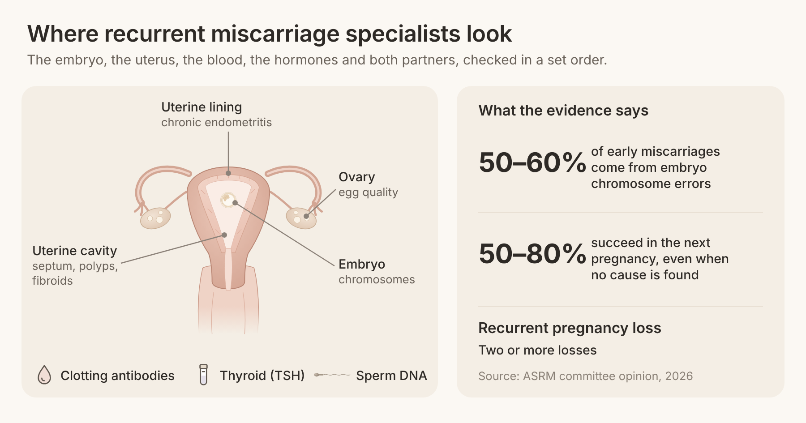
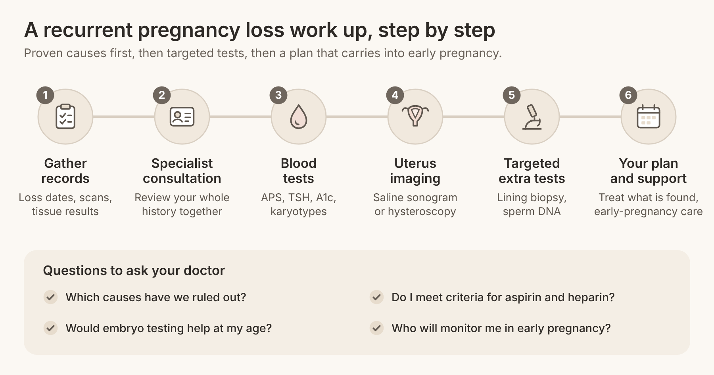

Quick answer: Recurrent miscarriage specialists can find a reason for repeated loss in many couples, and even when no single cause turns up, most women go on to have a baby: the 2026 ASRM committee opinion puts the chance of success in the next pregnancy at 50% to 80% without any specific treatment. A specialist works through a set order: the chromosomes of the lost pregnancy, both partners' chromosomes, the uterus, clotting antibodies, hormones, the uterine lining, sperm and egg quality. The goal is a plan that fits your history, not a generic panel.
In this article
You should consider a specialist after two or more pregnancy losses. Both the American Society for Reproductive Medicine (ASRM) and the European Society of Human Reproduction and Embryology (ESHRE, 2022 update) now define recurrent pregnancy loss (RPL) as the loss of two or more pregnancies, so you do not need to wait for a third.
If you have searched for help, you may have written something like one woman in a patient forum: "we were left without an explanation." Another said she was told it was "just bad luck," but "I just had this unshakeable feeling that something specific was going wrong." Those feelings are reasonable. A loss can have a cause in the embryo, the uterus, the blood, the hormones or the immune system, and a general obstetric visit rarely has time to check them all.
"Recurrent miscarriage specialist" is not a single board title. The doctors who do this work usually come from three fields:
Reproductive endocrinologists (REIs): fertility specialists who run the full recurrent pregnancy loss work up, imaging, IVF and embryo testing.
Reproductive immunologists: doctors who look at how the immune system and the uterine lining interact with an embryo. Few US physicians are trained as reproductive immunologists.
Maternal-fetal medicine (MFM) specialists: high-risk obstetricians who often take over care once a pregnancy is established, especially with clotting disorders.
At Rejuvenating Fertility Center, the reproductive immunology and endometriosis program brings fertility and immunology care under one roof, with no age cutoff and no weight cutoff.
The first round of testing follows the major guidelines and looks for the causes with proven treatments. Most of it can be done in one or two visits and a few blood draws.
According to the 2026 ASRM committee opinion, about 50% to 60% of first-trimester miscarriages are caused by a chromosome error in the embryo (aneuploidy, meaning too many or too few chromosomes). ASRM now recommends chromosome testing of miscarriage tissue, when it is available, as the first step. If the loss was aneuploid, the cause was most often the egg or sperm at that moment, and the rest of the plan changes.
A karyotype is a blood test that maps each partner's chromosomes. One partner can carry a balanced translocation, where two chromosomes have swapped pieces: that person is healthy, but some embryos receive an unbalanced set. ASRM advises offering this test when miscarriage tissue shows an unbalanced rearrangement or when no tissue result is available.
A septum (a wall of tissue dividing the cavity), polyps, fibroids or scar tissue can interfere with how a pregnancy attaches. ASRM recommends a cavity evaluation for every woman with unexplained RPL, usually by saline sonogram, 3D ultrasound or hysteroscopy (a thin camera passed through the cervix). Many of these problems can be corrected in a short outpatient procedure.
Antiphospholipid syndrome (APS) is an autoimmune condition in which antibodies make the blood more likely to clot in the placenta. It is tested with lupus anticoagulant, anticardiolipin and anti-beta-2 glycoprotein I blood tests, repeated 12 weeks apart. It matters because it is treatable: the ASRM evaluation and treatment opinion names low-dose aspirin plus heparin as standard care for documented APS.
ASRM advises a thyroid-stimulating hormone (TSH) test, and many specialists add thyroid antibodies, hemoglobin A1c for blood sugar and, when symptoms point to it, prolactin. These are simple blood tests, and an out-of-range result can usually be corrected before the next try.
When the first five checks are clear, an experienced specialist widens the search in a targeted way, based on your age, how far each pregnancy got and how you conceived. These next three areas are where a specialist's judgment makes the most difference.
Chronic endometritis is a silent, low-grade inflammation of the uterine lining, found on a biopsy stained for plasma cells (CD138). In a study of 360 women with unexplained recurrent miscarriage in Reproductive Sciences, 57.8% had chronic endometritis at hysteroscopy, and women whose inflammation cleared after antibiotics had far more pregnancies within a year (78.4%) than those whose inflammation persisted (17.5%). That is why a retest after chronic endometritis antibiotics matters as much as the prescription. The research section below covers a newer trial that adds an important caution.
Standard semen analysis counts and measures sperm but does not check the DNA inside them. A 2022 meta-analysis of 19 studies, covering 1,182 couples with unexplained recurrent miscarriage and 1,231 couples without, found significantly higher sperm DNA fragmentation in the recurrent miscarriage group. ESHRE now says a sperm DNA fragmentation test could be considered, so ask for it if your partner has not been evaluated.
Because so many losses come from aneuploid embryos, and aneuploidy rises with age, egg quality is often the real issue for women over 40. A specialist may suggest IVF to see and test embryos, strategies to improve egg quality after 40, ovarian support such as PRP ovarian rejuvenation, or donor eggs when that fits your goals. This is a planning choice, not a verdict: each path has helped women who once had repeated losses carry to term.
The short version: treatments work best when they target a proven cause, and several popular add-ons have now been tested in large trials. Here is what the strongest recent studies found, as of 2026.
Treatment | Who was studied | Result | Source |
Vaginal progesterone | 4,153 women with early bleeding | Live birth 75% vs 72% overall; 72% vs 57% with 3 or more prior miscarriages | PRISM, NEJM 2019 |
Low-molecular-weight heparin | 326 women with inherited thrombophilia and recurrent loss | Live birth 72% vs 71% with standard care | ALIFE2, Lancet 2023 |
Doxycycline before conception | 438 women with chronic endometritis and recurrent miscarriage | Live birth or ongoing pregnancy 52% vs 50% with placebo | CERM, Human Reproduction 2026 |
Aspirin plus heparin | Women with antiphospholipid syndrome | Standard recommended care | ASRM |
Progesterone and recurrent pregnancy loss. The PRISM trial gave vaginal progesterone or placebo to 4,153 women who had bleeding in early pregnancy. Live births were 75% versus 72% overall, but in women with three or more previous miscarriages the gap was wider: 72% with progesterone versus 57% with placebo. That is why both ESHRE and ASRM say progesterone may be offered in that setting.
Lovenox for recurrent pregnancy loss. Low-molecular-weight heparin (LMWH), such as enoxaparin (sold as Lovenox), is proven for APS. For inherited clotting variants such as Factor V Leiden, the ALIFE2 trial in The Lancet found no benefit: 72% live births with LMWH versus 71% without. ASRM now advises against routine thrombophilia testing and against blood thinners for unexplained loss, so a specialist will reserve heparin for women who meet APS criteria.
Antibiotics for chronic endometritis. The 2026 CERM trial screened more than 2,000 women with recurrent miscarriage, found 505 with CD138-positive endometritis, and randomized 438 to doxycycline or placebo. Live birth or ongoing pregnancy was 52% versus 50%, so a single standard antibiotic course before trying did not move the result. This does not end the conversation about the lining; it means treatment should be confirmed with a repeat biopsy and tailored, rather than given by default.

A normal workup is the most common result, and it is genuinely good news about your odds. The 2012 ASRM opinion notes that up to 50% of RPL cases have no clearly defined cause, and in an Irish cohort of 748 women in Human Reproduction Open, 60% were unexplained. Of the women in that cohort, 77% had another pregnancy, and 63% of those pregnancies ended in a live birth.
Age shapes those numbers. In the same cohort, the cumulative live birth rate was 44% for women aged 40 or older, which is exactly why over-40 care needs a sharper plan rather than more waiting. Here is what a specialist does next when everything is normal:
Re-read your history. How far each pregnancy got, whether heartbeats were seen, and whether tissue was tested often point to egg quality, the lining or the placenta.
Test the next loss, if one happens. A chromosome result on miscarriage tissue tells you whether the embryo or the environment is the likelier cause.
Consider IVF with embryo testing for the right patient. ASRM notes that preimplantation genetic testing (PGT-A) has not been shown to raise live births in RPL as a group, so this is a case-by-case decision, often most useful over 40 or with very few embryos.
Plan early-pregnancy support. Early ultrasounds, progesterone if bleeding starts, and fast access to your team.
Look after your mind as well. ASRM calls psychological support "an essential part of miscarriage care." Ask for it; it is part of treatment.
The most useful next step is a single consultation where someone reviews every record you have and builds an order of tests. One patient described wanting to "leave no stone unturned," and another said "we're unsure who to go with." A well-organized first visit answers both.
Before the visit:
Gather dates of each loss, ultrasound reports, any tissue (karyotype) results and prior blood work.
List any IVF cycles, embryo grades and test results.
Note family history of clotting, thyroid disease or autoimmune disease.
Tests to ask about:
Miscarriage tissue chromosome results, and parental karyotypes if needed
Uterine cavity imaging (saline sonogram, 3D ultrasound or hysteroscopy)
Antiphospholipid antibodies, TSH and thyroid antibodies, hemoglobin A1c
Endometrial biopsy for chronic endometritis when history suggests it
Semen analysis with sperm DNA fragmentation
AMH and antral follicle count if you are planning IVF
Questions for your doctor:
Which causes have we ruled out, and which are still open?
Would chromosome testing of embryos help in my case, given my age?
Do I meet the criteria for aspirin and heparin, or for progesterone?
Who will monitor me in early pregnancy, and how often?
If my own eggs are the main issue, what are my options?
Costs vary with the tests you need; RFC lists its fees on the pricing page. If you live outside the New York area, you can often do blood work and ultrasounds locally and travel in for procedures.

After two pregnancy losses. Both ASRM and ESHRE define recurrent pregnancy loss as two or more losses, so an evaluation is reasonable then. If you are over 35, or already working with a fertility clinic, there is good reason not to wait for a third.
The core tests are chromosome testing of the miscarriage tissue, parental karyotypes when needed, imaging of the uterine cavity, antiphospholipid antibody blood tests and a thyroid test. A specialist may add a biopsy of the lining, sperm DNA testing and egg reserve tests depending on your history.
It can help a specific group. In the PRISM trial, women with early bleeding and three or more previous miscarriages had 72% live births with vaginal progesterone versus 57% with placebo. ESHRE and ASRM both say it may be offered in that situation.
Lovenox (enoxaparin), a low-molecular-weight heparin, is standard together with low-dose aspirin for women with antiphospholipid syndrome. For inherited thrombophilias such as Factor V Leiden, the ALIFE2 trial found no improvement in live births, so it is not advised there.
Yes, and most women do. ASRM reports that 50% to 80% of women with unexplained recurrent pregnancy loss succeed in a later pregnancy without any specific intervention, and a targeted plan aims to do better for your situation.
Yes, mainly because more eggs carry chromosome errors with age. That is a challenge with real answers, including IVF with embryo testing, ovarian support, and donor eggs when you choose them.
Repeated loss is not "just bad luck" that you have to accept without answers. A specialist checks the embryo, both partners, the uterus, the blood, hormones, the lining and sperm in a clear order, and treats only what the evidence supports. Even when every test is normal, your chance of a healthy pregnancy is real, and a plan built around your history makes the next attempt a supported one.
If you have had two or more losses, the team at Rejuvenating Fertility Center can review your history, order the tests that fit it and stay with you into early pregnancy, whatever your age. Book a consultation to start with a clear plan. You can also read about why patients choose RFC, meet our doctors, or see how immunology affects IVF success.